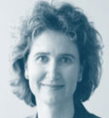
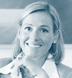
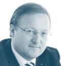

Was eine Fachanwältin, einen Fachanwalt auszeichnet
Um Rechtssuchenden die Suche nach einem qualifizierten Rechtsbeistand zu erleichtern, führte der Schweizerische Anwaltsverband SAV im Jahr 2006 mit dem Titel «Fachanwalt SAV/Fachanwältin SAV» ein neues Gütesiegel ein, dies in den Bereichen Arbeitsrecht, Erbrecht, Bau- und Immobilienrecht, Familienrecht sowie Haftpflicht- und Versicherungsrecht.

Den Titel «Fachanwalt SAV/Fachanwältin SAV im Arbeitsrecht» erhält nur, wer bestimmte Voraussetzungen erfüllt. Nebst überdurchschnittlicher Erfahrung im Arbeitsrecht und mehrjähriger Berufserfahrung als Rechtsanwalt oder Rechtsanwältin sind das Absolvieren einer intensiven und praxisorientierten Weiterbildung sowie das Bestehen einer schriftlichen Prüfung und eines Fachgespräches notwendig. Nach Erlangung des Titels besteht für Fachanwälte und Fachanwältinnen zudem eine Pflicht zur regelmässigen Weiterbildung.
 Anwältinnen / AnwälteFachanwalt finden202 Fachanwältinnen und Fachanwälte in 17 Kantonen
Anwältinnen / AnwälteFachanwalt finden202 Fachanwältinnen und Fachanwälte in 17 Kantonen

Fachanwältinnen und Fachanwälte SAV Arbeitsrecht
Vorteile für den Klienten und die Klientin
Die Klientinnen und Klienten profitieren bei komplexen Rechtsfragen stark von der erhöhten Kompetenz der Fachanwältinnen und Fachanwälte, denn dank ihrer besonderen Kenntnisse und ihrer langjährigen Praxis können sie die Vorgaben der Klienten häufig schneller und effektiver umsetzen.
Breites Wissen, grosse Erfahrung
Der Fachanwalt/die Fachanwältin bleibt aber Generalist und übernimmt alle Aufgaben eines Rechtsanwalts, denn Fachanwältinnen und Fachanwälte verfügen nach wie vor über breites Wissen und grosse Erfahrung im Schweizer Rechtssystem. Nebst ihrer Spezialisierung können sie so Rechtsuchende in allen anderen Fachbereichen kompetent und umfassend beraten.
Spezialistinnen und Spezialisten aus der ganzen Schweiz
 Raess-Eichenberger Susanne Dr. iur.Nötzli Raess Bächtold RechtsanwälteZürich · ZHBinder ErichBinder Sutter Mumenthaler WigetZürich · ZH
Raess-Eichenberger Susanne Dr. iur.Nötzli Raess Bächtold RechtsanwälteZürich · ZHBinder ErichBinder Sutter Mumenthaler WigetZürich · ZH
Bächtold Rahel lic. iur.Nötzli Raess Bächtold RechtsanwälteZürich · ZHChavanne Michelr & associés, avocatsLausanne · VD Nötzli Harry F. Dr. iur.Nötzli Raess Bächtold RechtsanwälteZürich · ZH
Nötzli Harry F. Dr. iur.Nötzli Raess Bächtold RechtsanwälteZürich · ZH
Bonard AlineCBWM & AssociésLausanne · VD Wyler RémyCBWM & AssociésLausanne · VD
Wyler RémyCBWM & AssociésLausanne · VD
Heller Heinz Dr.iur.Heller Rechtsanwälte AGZürich · ZHTätigkeitsgebiete
Die Fachanwältinnen und Fachanwälte beraten Sie in allen oder einzelnen Gebieten des Arbeits- rechts, namentlich in den folgenden Bereichen:
TätigkeitsgebieteNach Kanton
202 Fachanwältinnen und Fachanwälte in 17 Kantonen